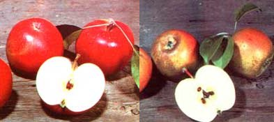

Nursery Tales
Sources for antique fruit varieties, including apples, orchards, blackberry
May/June 1983
I've also gotten a slew of catalogs from some of the smaller nurseries ... and I've discovered some "berry" nice varieties, indeed! Makiefski Berry Farm (Dept. TMEN, 7130 Platt Road, Ypsilanti, Michigan 48197) has a number of introductions from Ed Lowden, the Canadian bramble-breeder. Included are Lowden Sweet Purple raspberry (it's full-flavored and almost seedless) ... Mac Black black raspberry (disease-resistant and with an extended bearing period) ... Lowden "LBR" black raspberry (extremely hardy to northern Minnesota, even north of Lake Wobegone-and not susceptible to anthracnose) ... and "LBB" blackberry (low in acid, and almost immune to orange rust).
The Adams County Nursery (Dept. TMEN, Aspers, Pennsylvania 17304) offers a wide variety of high-budded dwarf fruit trees. The apples are grafted to M-9, EMLA-26, M-7A, EMLA-106, and EMLA111 rootstocks, and the peaches-some 41 different cultivars!-are on the standard Halford and Lovell roots or the cold-resistant Siberian C stocks. Mayo Nursery is yet another excellent source of apples and peaches (write Dept. TMEN, 8393 Klippel Road, Lyons, New York 14489). The company's catalog includes several of the antique varieties, as well as such modern favorites as Jonagold, Spigold, and the very disease-resistant Liberty.
Located on the chilly north slope of the Adirondacks, St. Lawrence Nurseries (Dept. TMEN, RD Z Potsdam, New York 13676, catalog $1.00, refundable) specializes in cold-hardy fruits (apples and pears) and nuts (black, Manchurian, and Persian walnuts ... hazelberts, the cross between the American hazelnut and the filbert... and the Ashworth bur oak, which produces acorns that are almost tannin-free). There are no dwarf trees offered by St. Lawrence, though: The rootstocks just won't stand up to the region's once-in-a-decade - 50 deg F cold! For next year,
however, be aware that St. Lawrence has scionwood-for grafting-of some 95 varieties of apples (until March 1 of every year), at $1.00 apiece (of course, standard trees are also available). Keep your eye on this outfit: It's got some exciting projects under way that willforgive the expression-bear fruit soon ... including coldtolerant (to 60 deg below!) kiwi fruit, edible-fruited purpleflowering honeysuckle, and truly hardy dwarf apple trees. Some of these are still a few years off, but they're well worth waiting for!
Folks in warmer climes, where inadequate chilling can sometimes be a problem when growing apples and peaches, will be glad to learn that a source new to me has issued an extremely attractive catalog of "tropic tolerant" fruits. Eastville Plantation (Dept. TMEN, P.O. Box 337, Bogart, Georgia 30622) offers low-chill apple varieties (Anna, Dorrsett, Ein Sheimer, Yates, and Granny Smith) and peaches (Flordawon, Flordabelle, Flordasun, and the rest of the Florda series ... plus Sunbrite, Suwannee, and others), as well as Muscadine grapes, Rabbit-eye blueberries, persimmons, pomegranates, pecans, and pawpaws.
Finally, among the "new" apple varieties from our old friends at Southmeadow Fruit Gardens (Dept. TMEN, Lakeside, Michigan 49116) are Edward VII-regarded by British connoisseurs as one of the finest culinary fruitsand two excellent cider apples: Foxwhelp and Kingston Black. The former is said to produce a fine beverage that -under the proper storage conditions-will last for many years.
Here's a short final note: To help folks develop expertise in gardening and farming, Penn State's cooperative extension service hasfor many years-offered a very inexpensive program of correspondence courses. For a free catalog of these fine offerings, drop a line to Bulletin, Dept. 500-TMEN, University Park, Pennsylvania 16802. Believe me, you'll be glad you did!

Several antique apple varieties?such as, but not necessarily including, the Esopus Spitzenbergs (RIGHT) and the Golden Russets (LEFT)-are often available through Lyons, New York's Mayo Nursery. You'll also find sources of scionwood (for grafting) ... lowacid blackberry plants ... special low-chill apple varieties (that can survive in especially warm regions) ... a cold-tolerant (to 60' below!) kiwi fruit ... and even a low- tannin eating-variety acorn ... all in this issue's The Seasons of the Garden column.
|
|
|